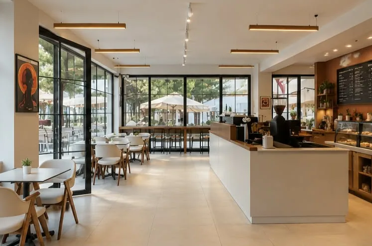
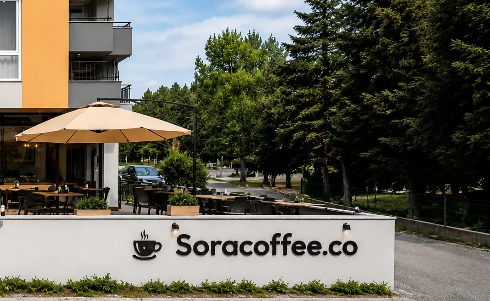

Gelin, oturun, kalın.
Geniş camlardan süzülen doğal ışık, ferah iç mekânı ve doğayla iç içe terasıyla Sora Coffee; güne keyifli bir mola vermek, verimli bir çalışma ortamında vakit geçirmek ya da dostlarla kaliteli anların tadını çıkarmak isteyenler için özel bir buluşma noktası sunuyor.
Çalışma masamız, kullanışlı priz noktalarımız ve konforlu oturma alanlarımızla üretkenliğinize eşlik ederken; şemsiyeler altındaki terasımızda kahvenizi açık havanın keyfiyle buluşturuyoruz.



